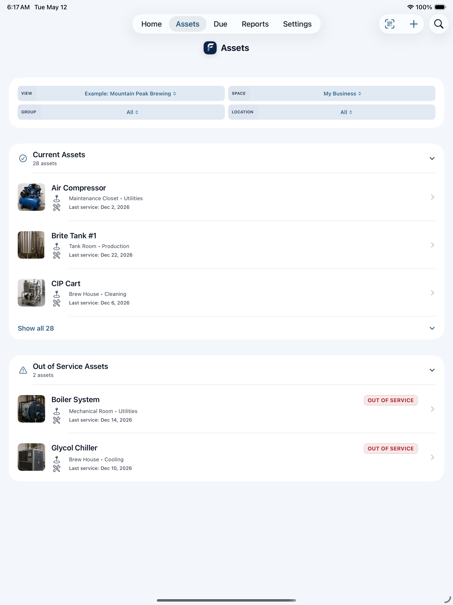

Equipment and facilities
Track machinery, appliances, rooms, vehicles, shop equipment, safety systems, and service areas.
For Small Businesses
Track equipment, facilities, vehicles, reminders, service history, costs, warranties, QR labels, and handoff reports from one private iPhone and iPad app.
Practical setup
FixLog gives small operators enough structure for equipment and facility records without the rollout project, cloud dashboard, or enterprise CMMS complexity.
Track machinery, appliances, rooms, vehicles, shop equipment, safety systems, and service areas.
Scan a label on the asset to open the exact record, review history, and log new work without searching.
Export clear maintenance records for managers, new owners, insurance questions, or internal accountability.
Pick your business type and FixLog suggests relevant templates with reminders and custom fields. Use them as a starting point, then customize the records to match how you operate.
Brewery / Craft Distillery · Restaurant / Commercial Kitchen · Food Manufacturing
HVAC · Electrical · Plumbing · General Construction · Landscaping
Commercial Property · Property Management · Hotel / Hospitality · Self-Storage · Gym / Fitness Studio
Trucking / Logistics · Moving Company · Service vehicles · Mobile equipment
Farm / Agriculture · Rural property · Outbuildings · Seasonal equipment
Auto Repair / Body Shop · Veterinary Clinic · Laundromat / Coin-Op · Specialty shops
In the app
FixLog works on iPhone and iPad so maintenance records can be checked where the work actually happens.
Status bar, needs attention, out-of-service alerts, and warranty watch.

Business asset list with status, location, category, and service context.

Review maintenance spend by asset, vendor, location, and time period.

Create an operations report with health score, completed work, and open items.

Keep the important details together without turning maintenance into an IT project.
Flag equipment that should not be used, then keep follow-up notes and repair records attached to the asset.
Record service costs, parts, labor, vendors, and repeat repairs so budgeting and replacement planning are easier.
Attach manuals, invoices, inspections, safety forms, warranty documents, and photos to the exact asset they belong to.
Keep locations, departments, rentals, fleets, shops, and business areas separate inside one app.
Get started
Download free, explore example business data, and unlock Pro when you are ready for unlimited records, reports, QR labels, exports, documents, and Spaces.